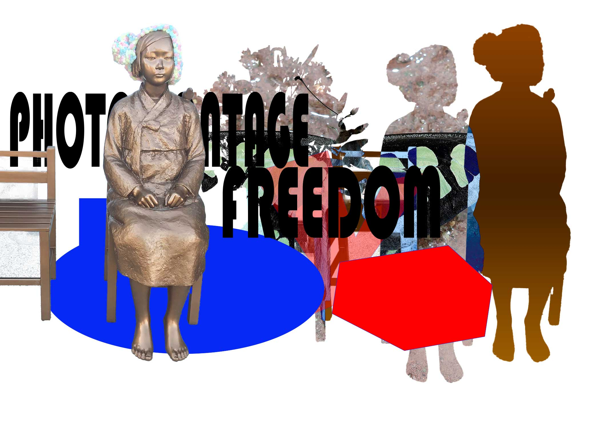

montagework.jpg (PSD screenshot with layers panel expanded)
Choose an Issue

photomontage.png
montagework.jpg (PSD screenshot with layers panel expanded)
Paragraph 1: Write about the concept or issue you are exploring. What is your message, and why does this topic matter to you?
Paragraph 2: Explain your process and techniques. Describe how you used selections and masks, which blending mode(s) you chose and why, and where your images came from (your own photos, public domain, online sources, etc.).
File guidelines:
Use lowercase letters only.
Do not use spaces or special characters in filenames.
Save the JPG files inside your GitHub images folder.